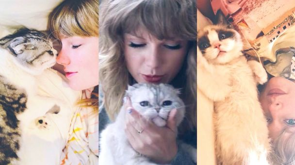

Los tres gatitos no se separan nunca de la cantante, para ella son parte de la famila, y como ella, ¡son unas estrellas!
Taylor Swift ha demostrado en muchas ocasiones el gran amor que siente por sus mascotas, sus tres gatitos Meredith, Olivia y Benjamin Button, que son miembros muy importantes de su familia.
El nombre completo de Meredith es Meredith Gray. ¿Te suena familiar? Bueno, si eres un Anatomía de Grey ventilador, ¡sin duda debería!
La pequeña Meredith recibe su nombre del personaje de Ellen Pompeo en el programa. Había otros grandes nombres en juego, Miranda Bailey, Lexie Gray e Izzie Stevens, solo por nombrar algunos, pero Swift aterrizó en Meredith. Sobre todo porque Meredith es uno de sus personajes favoritos. Ah, y ella también es un gato gris, así que es un alias perfecto.
Meredith es una llamativa Scottish Fold que ha sido parte de la vida de Swift desde Halloween de 2011. Es la primera de su familia felina y, por lo tanto, asume la responsabilidad de ser la hermana mayor de sus adorables hermanos.
Curiosidades de Meredith
En realidad, el apellido de Olivia no es Swift. Al igual que Meredith, ella tiene su propio apellido, Benson. ¿Sonar una campana? Si eres fanático del drama legal de Dick Wolf, Ley y orden: Unidad de víctimas especiales , no hay forma de que no conozcas a Olivia Benson.
Swift eligió el nombre en honor al personaje de Mariska Hargitay en el exitoso drama de NBC.
Tienes que admitir que Benson es un personaje bastante rudo. No solo hace todo lo posible para atrapar al delincuente, sino que también tiene un gran corazón. La cantante nominada al Globo de Oro ha sido una gran fan del drama procedimental desde siempre.
Curiosidades de Olivia
Swift adoptó a Benjamin Button mientras grababa el video musical de su canción "Me!".
Swift explicó que la razón de llamarlo Benjamin Button, es que "realmente me gustó la película Benjamin Button. Y Benjamin Button en la película es un tipo muy bueno. Siempre está haciendo lo correcto."
Curiosidades de Benjamin